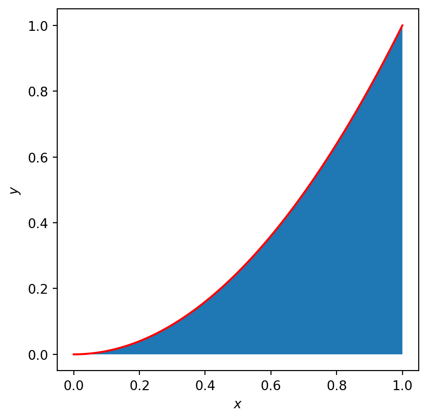
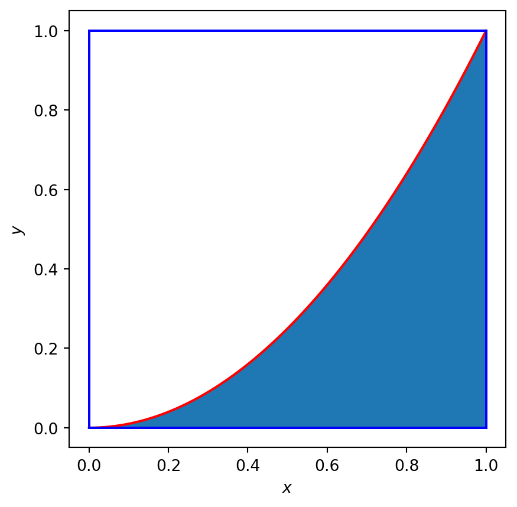

Monte Carlo integration
You may have previously come across definite integrals of the form
\[ I=\int_a^b f(x)\mathrm{d}x. \]
A specific example is \[ \int_0^1 x^2 \mathrm{d}x. \]
If you have not yet come across definite integrals that is fine. For the purposes of this page, the value of the integral is simply the area underneath the curve (see blue shaded region in Figure 1).
To compute the integral we can use a similar method to that used for estimating \(\pi\):
- circumscribe the region to be integrated within a domain of known area (e.g. see rectangle in Figure 2)
- uniformly sample points within the rectangle
- count the fraction of points that lie in the shaded region
- the value of the integral can be approximated by \[ \hat{I} \sim \textrm{Area of Rectangle} * \textrm{Fraction of sampled points in target region} \]

In Figure 3 you can use a Monte Carlo method to approximate many common integrals. Table 1 provides the syntax needed for available functions.
| Integrand | Input text |
|---|---|
| \(\sqrt{x}\) | sqrt(x) |
| \(\sin{x}\) | sin(x) |
| \(\cos{x}\) | cos(x) |
| \(\ln{x}\) | log(x) |
| \(x^2\) | x^2 |
| \(e^x\) | exp(x) |
| \(\pi\) | pi |
In Table 2 some examples are provided that demonstrate syntax for more complicated functions.
In the top plot the distribution of sampled points is plotted for a given realisation with the parameter values as you have chosen. In the bottom plot the estimate of the integral is averaged over 100 realisations and plotted against the number of sampled points, \(N\).
| Integrand | Input text |
|---|---|
| \(x^2+2x+1\) | x^2+2*x+1 |
| \(e^{-\sin^2{x}}\) | exp(-sin(x)*sin(x)) |
#| standalone: true
#| components: [viewer]
#| viewerHeight: 500
from shiny import App, Inputs, Outputs, Session, render, ui
from shiny import reactive
import numpy as np
from pathlib import Path
import matplotlib.pyplot as plt
from scipy.integrate import odeint
import sympy as sp
app_ui = ui.page_fluid(
ui.layout_sidebar(
ui.panel_sidebar(
ui.input_slider(id="N",label="N",min=10,max=3000,value=10,step=1),
ui.input_slider(id="a",label="a",min=0.0,max=3.0,value=0.0,step=0.01),
ui.input_slider(id="b",label="b",min=1.0,max=10.0,value=1.0,step=0.01),
ui.input_text(id='text',label="Integrand as function of x",value="sin(x)")
),
ui.panel_main(ui.output_plot("plot"),),
),
)
def server(input, output, session):
def function_f(x,text):
#f=np.sin(4*x)
f=np.sin(10*x)
f=parse_to_numpy_function(text,x)
return f
def parse_to_numpy_function(expression,x):
# Replace common mathematical operators with NumPy equivalents
expression = expression.replace("^", "**") # Replace '^' with '**'
expression = expression.replace("sin", "np.sin")
expression = expression.replace("cos", "np.cos")
expression = expression.replace("tan", "np.tan")
expression = expression.replace("log", "np.log")
expression = expression.replace("sqrt", "np.sqrt")
expression = expression.replace("exp", "np.exp")
expression = expression.replace("pi", "np.pi")
# Create a lambda function for safe evaluation
#def numpy_function(x):
return eval(expression)
#return expression
def estimate_int(a,b,N,text):
x = np.random.uniform(a,b,N)
f=function_f(x,text)
max_f=np.max(f)
min_f=np.min(f)
y = np.random.uniform(min_f,max_f,N)
num_points_inside_circle=len(y[(y>0)&(y<=f)])-len(y[(y<0)&(y>=f)])
int_est=(b-a)*(max_f-min_f)*num_points_inside_circle/N
return x,y,int_est
@render.plot
def plot():
fig, ax = plt.subplots(2,1)
#ax.set_ylim([-2, 2])
# Filter fata
N=int(input.N())
a=float(input.a())
b=float(input.b())
text=input.text()
x,y,int_est=estimate_int(a,b,N,text)
ax[0].plot(x[(y>0)&(y<function_f(x,text))],y[(y>0)&(y<function_f(x,text))],'b.')
ax[0].plot(x[(y<0)&(y>function_f(x,text))],y[(y<0)&(y>function_f(x,text))],'m.')
ax[0].plot(x[(y>0)&(y>function_f(x,text))],y[(y>0)&(y>function_f(x,text))],'k.')
ax[0].plot(x[(y<0)&(y<function_f(x,text))],y[(y<0)&(y<function_f(x,text))],'k.')
#ax[0].plot(x[(y>0)&(y>function_f(x))],y[(y>0)&(y>function_f(x))],'k.')
ax[0].set_xlabel('$x$')
ax[0].set_ylabel('$y$')
x_plot=np.linspace(a,b,1000,dtype=float)
y_plot=function_f(x_plot,text)
ax[0].plot(x_plot,y_plot,'r')
ax[0].set_title('$\hat{I}$='+str(int_est))
N_vec=np.linspace(10,3000,80,dtype=int)
int_est_vec=np.zeros_like(N_vec,dtype=float)
n_samples=200
for i in range(len(N_vec)):
int_est_i=np.zeros((n_samples,1),dtype=float)
for j in range(n_samples):
x,y,int_est=estimate_int(a,b,N_vec[i],text)
int_est_i[j]=int_est
int_est_vec[i]=np.median(int_est_i)
ax[1].plot(N_vec,int_est_vec,'.')
ax[1].set_xlabel('$N$')
ax[1].set_ylabel('$\hat{I}$')
fig.tight_layout()
plt.grid()
plt.show()
app = App(app_ui, server)Exercises:
Show that \[ \int_0^{1}x^2 \mathrm{d}x =\frac{1}{3}. \]
Estimate the integral \[ f(x)=\frac{\sin(x)\sin(x)\sin(x)}{1+x^2} \]
Demonstrate that \[ \int_0^{\infty}e^{-x^2}\mathrm{d}x =\frac{\sqrt{\pi}}{2} \] Note that this calculation provides an alternative method to estimate \(\pi\)!
Estimate the integral \[ \int_0^{1}\frac{x^2}{1+x^2}\mathrm{d}x. \]
Demonstrate that \[ \int_0^{\pi}\sin(x) \mathrm{d}x\sim 2 \]
Demonstrate that \[ \int_0^{2\pi}\sin(x) \mathrm{d}x\sim 0 \] Can you spot how the symmetry results in cancellation of the positive (blue) and negative (magenta) contributions?
Warning
- The algorithm implemented in Figure 3 above will always provide a numerical estimate. However, some functions are not integrable. In this case the numerical estimate provided by the app will be completely incorrect. We must understand the limitations of algorithms before trusting their output!
- There exist functions that are integrable but cannot be estimated using the above technique. We cannot rely solely on algorithms.
- How do we know how accurate the integral estimate is?
- There exist much more computationally efficient methods for estimating integrals to a given accuracy.
Note
At Dundee, core concepts from integration are introduced in the modules Maths 1A and Maths 1B and developed further in the modules Maths 2A and Maths 2B.
In the modules Introduction to Programming and Computer Algebra and Dynamical systems you would be introduced to techniques that enable you to perform numerical integration.
You can find out more about these modules here.